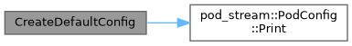
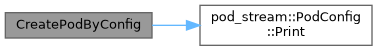
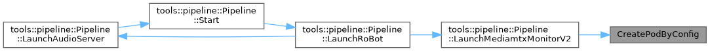
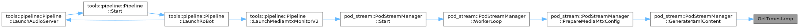

|
PROJECT_NAME 1.0.0
|
结构体 | |
| struct | PodConfig |
| 吊舱配置结构体 更多... | |
| class | PodStreamManager |
| 吊舱视频流管理器 (单例模式) 更多... | |
函数 | |
| PodConfig | CreateDefaultConfig () |
| 创建默认/示例配置 | |
| PodConfig | CreatePodConfigByUAV () |
| 创建无人机制定的配置 | |
| PodConfig | CreatePodByConfig (const nlohmann::json &json_config) |
| std::string | GetTimestamp () |
| 获取当前时间戳字符串 | |
| PodConfig CreateDefaultConfig | ( | ) |
创建默认/示例配置
引用了 PodConfig::abs_mediamtx_path, PodConfig::connect_debounce_count, PodConfig::crash_window_seconds, PodConfig::disconnect_debounce_count, PodConfig::graceful_stop_timeout_ms, PodConfig::max_crash_count, PodConfig::monitor_period_ms, PodConfig::open, PodConfig::pod_ip, PodConfig::Print(), PodConfig::rtsp_port, PodConfig::stream_mapping , 以及 PodConfig::worker_period_ms.

| PodConfig CreatePodByConfig | ( | const nlohmann::json & | json_config | ) |
引用了 PodConfig::abs_mediamtx_path, PodConfig::connect_debounce_count, PodConfig::crash_window_seconds, PodConfig::disconnect_debounce_count, PodConfig::graceful_stop_timeout_ms, PodConfig::max_crash_count, PodConfig::monitor_period_ms, PodConfig::open, PodConfig::pod_ip, PodConfig::Print(), PodConfig::rtsp_port, PodConfig::stream_mapping , 以及 PodConfig::worker_period_ms.
被这些函数引用 Pipeline::LaunchMediamtxMonitorV2().


| PodConfig CreatePodConfigByUAV | ( | ) |
| std::string GetTimestamp | ( | ) |
获取当前时间戳字符串
被这些函数引用 PodStreamManager::GenerateYamlContent().
